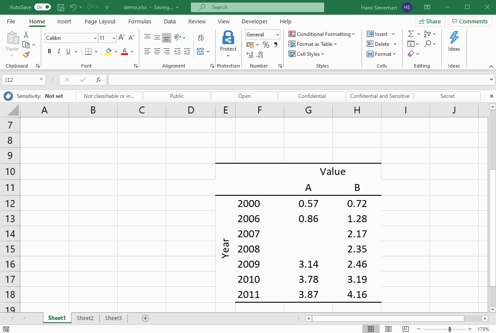

3 Getting Started with Microsoft Excel
3.1 Finding our way in Excel
Workbooks & worksheets
Okay let us open a new and empty Microsoft Excel document. It should look like below. The full document is what we call a workbook.
A Microsoft Excel workbook consists of a number of worksheets. We can think of a Microsoft Excel workbook like an old-fashioned paper workbook that consists of several (work) sheets. When we are working on a specific worksheet in Microsoft Excel it is like when we are working on a specific page. We can see the name of the worksheet (or page) we are currently working on in the bottom left corner as indicated with the arrow below.
As a default recent versions of Microsoft Excel only have one sheet to start with. That one sheet is called Sheet1. However, we can easily add new sheets by clicking on the little plus indicated with an arrow below.

By default Microsoft Excel gives the new sheet the name Sheet2 (very innovative!). And we can see in the image below that we are now working in Sheet2 because it is highlighted with white.
We can use the right mouse click on the name of a sheet to see a menu with options related to the sheet. We can rename a sheet, we can copy it, we can move it and we can delete it.
Let’s use the zoom bare to get a closer look at how worksheets are organised. The zoom bar is placed in the lower right corner as indicated with the arrow below.
The worksheet consists of a lot of cells, just like a page in a squared notebook. In the image below we’ve selected the cell called B2. That is the cell that lies in the intersection between column B and row 2. We can see that this cell is currently selected because it has a solid green border, while all other cells have a light grey thin border.

In general we identify the column by the letter in the header. We can select an entire column by clicking on the letter in the header. Once we’ve selected the entire column B it will look as below.

We identify the row by the number on left . We can select an entire row by clicking on the number. If we’ve selected the entire row 2 it will look as below.

The ribbon
The cells is where we enter the data, formulas, labels, and other content. Above the cells we have the ribbon (marked with yellow below) with various icons to modify and exploit the content in the cells.

The functions shown in the ribbon depend on the tab selected above the ribbon (marked with yellow below). We will be working on the Home tab where we can change the font type and do other basic operations. However, the other tabs are also very useful as we will see later. To change the content of the ribbon, simply click on the tab header. For example on the Data tab indicated with an arrow in the image below.
Note that new tabs will appear when relevant. For example if we have selected a calc in our worksheet, tabs (and corresponding ribbons) related to calcs will appear.

Entering values
Once we’ve selected a column we can start typing numerical values or letters to add content to the column. We can also use the double-click with the mouse to get “into” the cell and add values. We can see the content of the cell in two places. First in the content itself. Looking at the example below, we clearly see - by looking at cell B2 - that it contains the numbers 12375. However, because the cell is also selected, we can also see the content of the cell in the **Formula Bar* above (the upper arrow in the image).
- Tip 1: While the cell itself will show the evaluated content of the cell, the formula bar will show the non-evaluated content. For example if the cell contains a formula, the formula bar will show the formula as we entered it, the cell instead will show the result of the formula.
- Tip 2: If you want to change the content of a cell, select the cell (by clicking on it with the mouse or moving to it with the arrow buttons) and press the button “F2”. In that way you will enter the cell instead of replacing the content (which will happen if you just start typing) .
We can also right-click on the cell to see a menu of options related to this cell. The menu looks like below.
If we’ve copied or cut a cell (using the menu above or ctrl+c/ctrl+x or cmd+c/cmd+x) the cell that is copied (or cut) will be marked with a dashed green border.
We can then paste the content by clicking using the keyboard shortcut ctrl+v or cmd+v or by right-clicking and clicking on the paste icon indicated below.
Note that Microsoft Excel has quite advanced copy-pasting options. We will cover these later.
3.2 Using Microsoft as a calculator
Worksheet cells can contain a wide range of content: Text, numerical values, dates, symbols and so on. Below is an example where cell B2 contains the words “Hellow World”, cell B3 contains the number “1234”, and the cell B4 the symbols “!!!”.
If we want Microsoft Excel not only to show the content of a cell, but also to evaluate the content entered in the cell - like actually calculating the outcome of a mathematical expression - we have to start the cell content with a “=” symbol as done in the example below.
The example below is an example where what we see by just looking at cell content deviates from what we entered. We just observe the number “3” when looking at cell B2. However, when we look at the formula bar above, we can see that the cell contains the formula “=1+2”. That is the advantage of the formula bar, we can see what actually goes on in the cell.
We can enter complicated formulas in the cells using common operators.

We can also use built-in functions in the formulas in the cell. For example the in the image below we use the “sum” function to calculate the sum of the values 1 and 23.

… which of course gives 24.

What if we don’t know the name of the function? We can click on the symbol \(f_x\) which opens a menu allowing us to search for functions. This menu also contains explanations on how to use the function.
3.3 Sorting data
We can quickly rearrange the content of our worksheets using the sort function. The sort function can rearrange the content by specific columns and according to their numerical value or the alphabetical order.
Consider the example below where we have data in eight cells across two columns and eight rows.
In this case we are interested in rearranging the data such that it is ordered by the number in the second column, from smallest to largest. Importantly, the content in the first column is related to the numerical value. The 3 in cell B2 is the value for the group “Value a”. If we move the 3 we also want to move the “Value a”.
To sort the data first select all the cells that should be sorted as in the example below.

Now go to the Data tab and in the data ribbon click on sort.

You will now see a menu about sorting like the one below. The menu asks you:
What column you want to use to determine the order of the values.
How to order the values (smallest to largest, largest to smallest, and so on).
Whether we want to more additional sorting columns. For example if we tell Microsoft Excel to sort by column B, what happens if two rows have exactly the same value in column B? What determines the order in that case? We can tell Microsoft Excel to look at the content of another column after it used the first column to sort the data. That means that if two rows have the same order in the first sorting column, their internal order will depend on the second sorting column.

In this example we tell Microsoft Excel to sort the data by column B …

… from smallest to largest.

After we click “OK” the contents of the cells is rearranged. Note that the row numbers and column letters are constant. They don’t move!

If our data have titles - like in the example below - we can include these titles when we select the data for sorting.

In the sorting menu, make sure that the “My data has headers” is selected if the data has headers. If not make sure it is not selected. Including the headers can be helpful in large datasets, because you might not remember the content of column AB, but the data header might be easier to remember.
It is important to select all the data that should be rearranged. If you leave out adjacent columns when selecting the data and clicking sort, Microsoft Excel might give you a warning like the one below and ask you whether you want to include it. If you don’t include it, you will lose the link between the column!

3.4 Referencing across cells
A really useful feature of Microsoft Excel is that we can reference across cells. In other words, we can let the content of one cell depend on the content of another cell or several cells. For example in the example below we add a column that captures the average of Value A and Value B. Now, in cell D2 we could simply type (0.57+0.72)/2 which would be the average of Value A and Value B. This approach is not very efficient because
It is very likely that we make typing mistakes. In general we should minimize manual entry of values.
If we change the content of column B (Value A), we would have to manually update the content of column D.
It is slow!
What can we do instead? We can reference across cells. Instead of typing 0.57 we refer to cell B2. Instead of typing 0.72 we refer to cell C2 like in the example below:

Now you might think that this certainly isn’t faster than typing the values, but wait! Instead of retyping this formula for every row, we can expand the formula by clicking on the square in the lower right corner and dragging the selection all the way down.

Voila! Microsoft Excel automatically entered the formula in all cells and updated the references, so that the formula in cell D8 refers to the content cells B8 and C8.

How did Microsoft Excel guess what you wanted to do? Microsoft Excel simply follows a systematic pattern. If you expand the formula in a direction, it updates all the cell references in the same direction. Expanding a formula downwards by one cell will make Microsoft Excel update all the row numbers to one row further down.
What if we didn’t want Microsoft Excel to do that? Consider the example below where we add the value 1 to all cells. We don’ type the 1 manually in the formula because we want to able to change the value afterwards for all cells by just changing one cell. We therefore refer to cell H2 where we added the value 1.

Now if we expand the formula down (just like above) Microsoft Excel will also update the reference cell H2 to a row further down. This will lead to an error in the formula! How can we avoid that?

We can lock cell references to suppress the automatic reference updating by Microsoft Excel. We lock a cell using the $ symbol as in the example below.
We use two $ symbols. One in front of the “H” which means “Never change the column, stick to the H column”. One in front of the 2 which means “Never change the row, always stick to row 2!”.
If we now expand the formula downwards the reference to cell B8 is updated as desired and the reference to cell H2 stays fixed as desired!

You don’t have to include two dollar signs. If you only want to lock the column, only put it in front of the letter. If you only want to lock the row, only put it in front of the number.
3.5 Copy-pasting
Microsoft Excel have some special copy-pasting options. The animation below illustrates some of the hese.
